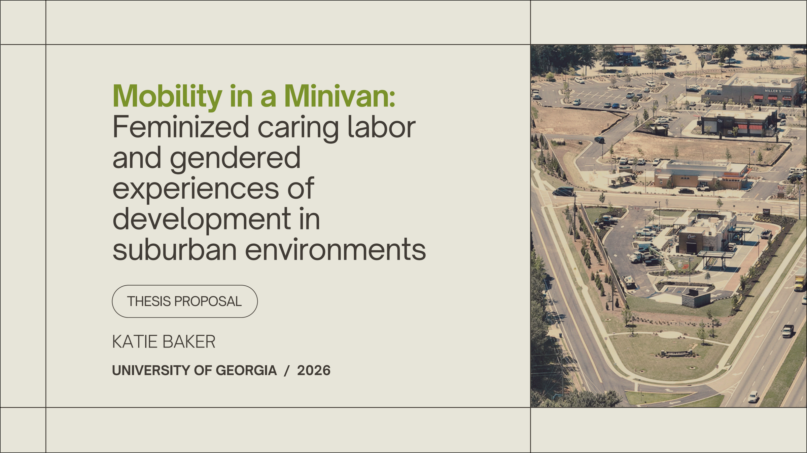

Katie Baker
Geographer & Urban Planner
About Me
I’m a recent graduate of the University of Georgia with a Bachelor of Geography and Political Science. I
also earned certificates in GIS and Urban & Metropolitan Studies as part of my Geography degree. I am
returning to UGA to complete a Master of Urban Planning and Design, where I’ll be exploring gendered
experiences of the built environment for my thesis work. In my spare time, you can catch me practicing
yoga and pilates at my favorite local studio, reading the newest fiction drama, or building my record
collection. Feel free to reach out, and Go Dawgs!
Professional Strengths
Human-Environment Interactions
In order to best serve their communities, planners have to understand why spatial and social
patterns emerge and why they relate. My focus as a geographer falls into this human-environment
niche. In a planning context, I bring to the table an understanding of how the built environment
relates to social issues and how government planning (and non-planning) policies have shaped
that
relationship.
Geographic Information Systems
UGA’s GIS certificate develops students’ technical and representative GIS skills using industry
standard tools like Esri’s ArcGIS Pro. Through the completion of my GIS certificate I’ve learned
spatial analysis, data management, and cartographic principles that are essential for modern
planners. I also have professional experience with supplementary Esri products like StoryMaps
and
123 Survey that enhance data analysis done in ArcGIS Pro.
Communication
Communication is one of the most valuable skills I’ve developed at UGA and in my professional
experiences. In my human geography classes, most of my coursework involved synthesizing
information
and theories from multiple authors and clearly communicating the relevance of those topics to a
central thesis. During my time at Athens-Clarke County, I was able to tailor my visual
communication
skills to a public-facing purpose in the form of park and Greenway wayfinding signage. Both of
these
types of communication, written and visual, are crucial to a planner’s role as a public servant.
Education
Master of Urban Planning and Design
University of Georgia
2025-2027
Bachelor of Arts in Geography
University of Georgia
2022-2026
Certificates in Geographic Information Systems (GIS) and Urban & Metropolitan Studies.
Bachelor of Arts in Political Science
University of Georgia
2022-2026
Experience
River City Company
This summer, I’ll be working with River City Company, an urban planning nonprofit in Chattanooga that
functions as the city’s economic development engine. I’ll be developing RCC’s GIS database to streamline
the team’s workflow and centralize their spatial data.
ACC
Athens-Clarke County Leisure Services
Planning Support Specialist
2024-2025
As a Planning Support Specialist, I used ArcGIS Pro and Adobe Illustrator to create maps and signage for
the Athens-Clarke County Greenway and parks system, managed ArcGIS Online and FieldMaps databases to
collect, display, and analyze data, and researched the needs of park users to create public input tools.
Projects

Greenway Network Map
View More
As a Planning Support Specialist in the Leisure Services Department, I designed signage and
maps
for the ACC park system and North Oconee River Greenway. The Greenway signage package was my
main project and was my most valuable learning experience at ACC. It is incredibly rewarding
to
be able to go see my work making an impact on peoples’ park experiences in Athens every day!

New Orleans Environmental Design Project
View More
Our semester project for Urban Planning Studio I focused on urban revitalization in
Algiers,
New Orleans and involved each of the project design phases prior to implementation. We
were
able to visit New Orleans during our inventory stage to participate in service learning
activities, where we learned about local coastal restoration and green infrastructure
projects. During the design phase, I planned the open green space concept for my group.
The
main piece of the green spaces plan was a connected network of vacant lots to be
repurposed
into community green spaces in a single family neighborhood. The goal was to improve
residents’ everyday access to green spaces, whether that be living a block from a
community
garden or accessing a farmers’ market via trails on adjacent vacant lots.

Graduate Thesis
View More
In recent planning efforts to bring cities into a new urbanist future, suburban
commercial
zones are often neglected. This study examines whether this reality disproportionately
impacts suburban women's ability to experience the same planning improvements as their
male
counterparts due to gendered divisions of labor. In my final thesis, I will be using my
study results to explore the ways that we can tailor urban redevelopment strategies to
fit
suburban settings in order to improve the experience of feminized caring labor.